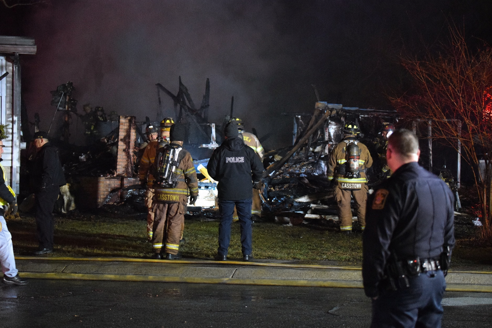

Explosión mortal en Westbrook Heights deja dos fallecidos; la investigación continúa

Los servicios de emergencia recibieron múltiples llamadas alrededor de las 12:07 de la madrugada después de que residentes de varias calles cercanas escucharan una fuerte detonación seguida de un incendio visible a varios cientos de metros de distancia. Los bomberos lograron contener las llamas antes de que se propagaran a viviendas adyacentes, aunque la casa quedó completamente destruida.
La principal víctima identificada es Kara Williams, de 34 años, una ingeniera especializada en sistemas industriales que trabajaba para una empresa tecnológica de la región. Compañeros de trabajo y vecinos la describen como una profesional prometedora y una residente apreciada en la comunidad.
La segunda víctima es el Oficial Thomas Bertram, veterano del Departamento de Policía de Grayhaven. Según declaró su viuda a este periódico, Bertram se encontraba fuera de servicio en el momento del incidente, pero decidió acercarse a la vivienda de Williams tras escuchar lo que describió como "ruidos extraños" procedentes de la propiedad.
Las autoridades no han explicado todavía por qué el oficial se encontraba tan cerca de la vivienda cuando se produjo la explosión. Sin embargo, el Departamento de Policía ha anunciado que considera su fallecimiento como ocurrido en acto de servicio, una decisión que ha sido respaldada por el Ayuntamiento.
Los primeros informes apuntan a una posible fuga de gas como causa del siniestro. No obstante, varias fuentes cercanas a la investigación han señalado al Chronicle que los investigadores están estudiando otros elementos hallados en la escena. Ninguna de estas fuentes ha querido ofrecer detalles adicionales, aunque coinciden en que "podría haber más de lo que parece".
La policía insiste en que es demasiado pronto para sacar conclusiones y ha pedido a la ciudadanía que evite difundir especulaciones mientras continúan los trabajos periciales.
Mientras tanto, han comenzado a circular rumores sobre posibles vínculos familiares de la fallecida con actividades criminales. Algunos residentes afirman que Williams mantenía una relación distante con un hermano conocido por haber tenido problemas con la ley en el pasado, y varios encontronazos con el Oficial Bertram. Las autoridades no han confirmado ni desmentido estas informaciones y, por el momento, no existe ninguna acusación formal relacionada con el caso.
La investigación ha sido asignada al Inspector Richard Hale, de la División de Delitos Mayores, quien supervisará las pesquisas junto con especialistas en incendios y técnicos forenses. Las autoridades solicitan que cualquier persona que haya observado actividad inusual en Westbrook Heights durante la noche del martes se ponga en contacto con la policía.
"Todas las hipótesis continúan abiertas", declaró brevemente Hale durante una comparecencia ante los medios esta mañana.
La compañía no ha confirmado si suspenderá temporalmente sus operaciones en la zona.
Las autoridades solicitan que cualquier persona que haya observado actividad inusual en Westbrook Heights durante la noche del martes se ponga en contacto con la policía.